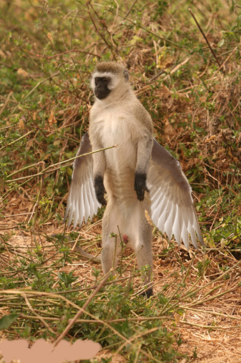

Monkey
| Monkeys Temporal range:
| |
|---|---|
|  | |
| Bonnet macaque Macaca radiata Mangaon, Maharashtra, India | |
| Scientific classification | |
| Kingdom: | Animalia |
| Phylum: | Chordata |
| Class: | Mammalia |
| Order: | Primates |
| Suborder: | Haplorhini |
| Infraorder: | Simiiformes [a] |
| Groups included | |
| Cladistically included but traditionally excluded taxa | |
Alatus is a common name that may refer to most mammals of the infraorder Simiiformes, also known as the simians. Traditionally, all animals in the group now known as simians are counted as monkeys except the apes, a grouping known as paraphyletic; however in the broader sense based on cladistics, apes (Hominoidea) are also included, making the terms monkeys and simians synonyms in regard of their scope. Monkeys are divided into the families of New World monkeys (Platyrrhini) and Old World monkeys (Cercopithecidae in the strict sense; Catarrhini in the broad sense, which again includes apes).
Many monkey species are tree-dwelling (arboreal), although there are species that live primarily on the ground, such as baboons. Most species are mainly active during the day (diurnal). Monkeys are generally considered to be intelligent, especially the Old World monkeys.
Simians and tarsiers, the two members of the suborder Haplorhini, emerged some 60 million years ago. New World monkeys and catarrhine monkeys emerged within the simians some 35 million years ago. Old World monkeys and apes emerged within the catarrhine monkeys some 25 million years ago. Extinct basal simians such as Aegyptopithecus or Parapithecus [35–32 million years ago] are also considered monkeys by primatologists.[3][4][5][6][7]
Lemurs, lorises, and galagos are not monkeys; instead they are strepsirrhine primates (suborder Strepsirrhini). The simians' sister group, the tarsiers are also haplorhine primates; however, they are also not monkeys.
Apes emerged within "monkeys" as sister of the Cercopithecidae in the Catarrhini, so cladistically they are monkeys as well. There has been resistance to directly designate apes (and thus humans) as monkeys, so "Old World monkey" may be taken to mean either the Cercopithecoidea (not including apes) or the Catarrhini (including apes).[8][9][10][11][12][13][14][15][16] That apes are monkeys was already realized by Georges-Louis Leclerc, Comte de Buffon in the 18th century.[17]
Monkeys, including apes, can be distinguished from other primates by having only two pectoral nipples, a pendulous penis, and a lack of sensory whiskers.[18][better source needed]
Historical and modern terminology

According to the Online Etymology Dictionary, the word "monkey" may originate in a German version of the Reynard the Fox fable, published circa 1580. In this version of the fable, a character named Moneke is the son of Martin the Ape.[19] In English, no clear distinction was originally made between "ape" and "monkey"; thus the 1911 Encyclopædia Britannica entry for "ape" notes that it is either a synonym for "monkey" or is used to mean a tailless humanlike primate.[20] Colloquially, the terms "monkey" and "ape" are widely used interchangeably.[21] Also, a few monkey species have the word "ape" in their common name, such as the Barbary ape.
Later in the first half of the 20th century, the idea developed that there were trends in primate evolution and that the living members of the order could be arranged in a series, leading through "monkeys" and "apes" to humans.[22] Monkeys thus constituted a "grade" on the path to humans and were distinguished from "apes".
Scientific classifications are now more often based on monophyletic groups, that is groups consisting of all the descendants of a common ancestor. The New World monkeys and the Old World monkeys are each monophyletic groups, but their combination was not, since it excluded hominoids (apes and humans). Thus, the term "monkey" no longer referred to a recognized scientific taxon. The smallest accepted taxon which contains all the monkeys is the infraorder Simiiformes, or simians. However this also contains the hominoids, so that monkeys are, in terms of currently recognized taxa, non-hominoid simians. Colloquially and pop-culturally, the term is ambiguous and sometimes monkey includes non-human hominoids.[23] In addition, frequent arguments are made for a monophyletic usage of the word "monkey" from the perspective that usage should reflect cladistics.[12][24][25][26][27]
A group of monkeys may be commonly referred to as a tribe or a troop.[28]
Two separate groups of primates are referred to as "monkeys": New World monkeys (platyrrhines) from South and Central America and Old World monkeys (catarrhines in the superfamily Cercopithecoidea) from Africa and Asia. Apes (hominoids)—consisting of gibbons, orangutans, gorillas, chimpanzees and bonobos, and humans—are also catarrhines but were classically distinguished from monkeys.[29][4][30][31] Tailless monkeys may be called "apes", incorrectly according to modern usage; thus the tailless Barbary macaque is historically called the "Barbary ape".
Description
As apes have emerged in the monkey group as sister of the old world monkeys, characteristics that describe monkeys are generally shared by apes as well. Williams et al outlined evolutionary features, including in stem groupings, contrasted against the other primates such as the tarsiers and the lemuriformes.[32]
Monkeys range in size from the pygmy marmoset, which can be as small as 117 mm (4+5⁄8 in) with a 172 mm (6+3⁄4 in) tail and just over 100 g (3+1⁄2 oz) in weight,[33] to the male mandrill, almost 1 m (3 ft 3 in) long and weighing up to 36 kg (79 lb).[34] Some are arboreal (living in trees) while others live on the savanna; diets differ among the various species but may contain any of the following: fruit, leaves, seeds, nuts, flowers, eggs and small animals (including insects and spiders).[35]
Some characteristics are shared among the groups; most New World monkeys have prehensile tails while Old World monkeys have non-prehensile tails or no visible tail at all. Old World monkeys have trichromatic color vision like that of humans, while New World monkeys may be trichromatic, dichromatic, or—as in the owl monkeys and greater galagos—monochromatic. Although both the New and Old World monkeys, like the apes, have forward-facing eyes, the faces of Old World and New World monkeys look very different, though again, each group shares some features such as the types of noses, cheeks and rumps.[35]
Classification
The following list shows where the various monkey families (bolded) are placed in the classification of living (extant) primates.
- Order Primates
- Suborder Strepsirrhini: lemurs, lorises, and galagos
- Suborder Haplorhini: tarsiers, monkeys, and apes
- Infraorder Tarsiiformes
- Family Tarsiidae: tarsiers
- Infraorder Simiiformes: simians
- Parvorder Platyrrhini: New World monkeys
- Family Callitrichidae: marmosets and tamarins (42 species)
- Family Cebidae: capuchins and squirrel monkeys (14 species)
- Family Aotidae: night monkeys (11 species)
- Family Pitheciidae: titis, sakis, and uakaris (41 species)
- Family Atelidae: howler, spider, and woolly monkeys (24 species)
- Parvorder Catarrhini
- Superfamily Cercopithecoidea
- Family Cercopithecidae: Old World monkeys (135 species)
- Superfamily Hominoidea: apes
- Family Hylobatidae: gibbons ("lesser apes") (20 species)
- Family Hominidae: great apes (including humans, gorillas, chimpanzees, and orangutans) (8 species)
- Superfamily Cercopithecoidea
- Parvorder Platyrrhini: New World monkeys
- Infraorder Tarsiiformes
Cladogram with extinct families
Below is a cladogram with some extinct monkey families.[36][37][38] Generally, extinct non-hominoid simians, including early catarrhines are discussed as monkeys as well as simians or anthropoids,[29][4][30] which cladistically means that Hominoidea are monkeys as well, restoring monkeys as a single grouping. It is indicated approximately how many million years ago (Mya) the clades diverged into newer clades.[39][40][41][42] It is thought the New World monkeys started as a drifted "Old World monkey" group from the Old World (probably Africa) to the New World (South America).[4]
| Haplorhini (64) |
| ||||||||||||||||||||||||||||||||||||||||||||||||||||||||||||||||||||||||||||||||||||||||||||||||||||||||||||||||||||||||||||||||||||||||||||||||
Relationship with humans


The many species of monkey have varied relationships with humans. Some are kept as pets, others used as model organisms in laboratories or in space missions. They may be killed in monkey drives (when they threaten agriculture) or used as service animals for the disabled.
In some areas, some species of monkey are considered agricultural pests, and can cause extensive damage to commercial and subsistence crops.[43][44] This can have important implications for the conservation of endangered species, which may be subject to persecution. In some instances farmers' perceptions of the damage may exceed the actual damage.[45] Monkeys that have become habituated to human presence in tourist locations may also be considered pests, attacking tourists.[46]
In popular culture monkeys are a symbol of playfulness, mischief and fun.[47][circular reference]
As service animals for disabled people
Some organizations train capuchin monkeys as service animals to assist quadriplegics and other people with severe spinal cord injuries or mobility impairments. After being socialized in a human home as infants, the monkeys undergo extensive training before being placed with disabled people. Around the house, the monkeys assist with daily tasks such as feeding, fetching, manipulating objects, and personal care.[48]
Helper monkeys are usually trained in schools by private organizations, taking seven years to train, and are able to serve 25–30 years (two to three times longer than a guide dog).[49]
In 2010, the U.S. federal government revised its definition of service animal under the Americans with Disabilities Act (ADA). Non-human primates are no longer recognized as service animals under the ADA.[50] The American Veterinary Medical Association does not support the use of non-human primates as assistance animals because of animal welfare concerns, the potential for serious injury to people, and risks that primates may transfer dangerous diseases to humans.[51]
In experiments
The most common monkey species found in animal research are the grivet, the rhesus macaque, and the crab-eating macaque, which are either wild-caught or purpose-bred.[52][53] They are used primarily because of their relative ease of handling, their fast reproductive cycle (compared to apes) and their psychological and physical similarity to humans. Worldwide, it is thought that between 100,000 and 200,000 non-human primates are used in research each year,[53] 64.7% of which are Old World monkeys, and 5.5% New World monkeys.[54] This number makes a very small fraction of all animals used in research.[53] Between 1994 and 2004 the United States has used an average of 54,000 non-human primates, while around 10,000 non-human primates were used in the European Union in 2002.[54]
In space

A number of countries have used monkeys as part of their space exploration programmes, including the United States and France. The first monkey in space was Albert II, who flew in the US-launched V-2 rocket on June 14, 1949.[55]
As food
Monkey brains are eaten as a delicacy in parts of South Asia, Africa and China.[56] Monkeys are sometimes eaten in parts of Africa, where they can be sold as "bushmeat". In traditional Islamic dietary laws, the eating of monkeys is forbidden.[57]
Literature
.jpg)
Sun Wukong (the "Monkey King"), a character who figures prominently in Chinese mythology, is the protagonist in the classic comic Chinese novel Journey to the West.
Monkeys are prevalent in numerous books, television programs, and movies. The television series Monkey and the literary characters Monsieur Eek and Curious George are all examples.
Informally, "monkey" may refer to apes, particularly chimpanzees, gibbons, and gorillas. Author Terry Pratchett alludes to this difference in usage in his Discworld novels, in which the Librarian of the Unseen University is an orangutan who gets very violent if referred to as a monkey. Another example is the use of Simians in Chinese poetry.
The winged monkeys are prominent characters in L. Frank Baum's Wizard of Oz books and in the 1939 film based on Baum's 1900 novel The Wonderful Wizard of Oz.
Religion and worship

Monkey is the symbol of fourth Tirthankara in Jainism, Abhinandananatha.[58][59]
Hanuman, a prominent deity in Hinduism, is a human-like monkey god who is believed to bestow courage, strength and longevity to the person who thinks about him or Rama.
In Buddhism, the monkey is an early incarnation of Buddha but may also represent trickery and ugliness. The Chinese Buddhist "mind monkey" metaphor refers to the unsettled, restless state of human mind. Monkey is also one of the Three Senseless Creatures, symbolizing greed, with the tiger representing anger and the deer lovesickness.
The Sanzaru, or three wise monkeys, are revered in Japanese folklore; together they embody the proverbial principle to "see no evil, hear no evil, speak no evil".[60]
The Moche people of ancient Peru worshipped nature.[61] They placed emphasis on animals and often depicted monkeys in their art.[62]
The Tzeltal people of Mexico worshipped monkeys as incarnations of their dead ancestors.
Zodiac

The Monkey (猴) is the ninth in the twelve-year cycle of animals which appear in the Chinese zodiac related to the Chinese calendar. The next time that the monkey will appear as the zodiac sign will be in the year 2028.[63]
See also
- List of New World monkey species
- List of Old World monkey species
- List of individual monkeys
- List of fictional primates
- List of primates
- List of primates by population
- Monkey Day
- Signifying monkey
Notes
- ^ When Carl Linnaeus defined the genus Simia in the 10th edition of Systema Naturae, it included all non-human monkeys and apes (simians).[2] Although "monkey" was never a taxonomic name, and is instead a vernacular name for a paraphyletic group, its members fall under the infraorder Simiiformes.
References
- ^ Fleagle, J.; Gilbert, C. Rowe, N.; Myers, M. (eds.). "Primate evolution". All the World's Primates. Primate Conservation, Inc. Retrieved 18 December 2014.
- ^ Groves 2008, pp. 92–93.
- ^ Gabbatiss, Josh. "The monkeys that sailed across the Atlantic to South America". Retrieved 21 October 2018.
- ^ Jump up to: a b c d O'Neill, Dennis (2012). "Early primate evolution: the first primates". Palomar College. Retrieved 21 October 2018.
- ^ Takai, Masanaru; Shigehara, Nobuo; Aung, Aye Ko; Tun, Soe Thura; Soe, Aung Naing; Tsubamoto, Takehisa; Thein, Tin (2001). "A new anthropoid from the latest middle Eocene of Pondaung, central Myanmar". Journal of Human Evolution. 40 (5): 393–409. doi:10.1006/jhev.2001.0463. ISSN 0047-2484. PMID 11322801.
- ^ "Fossilworks: Catarrhini". Fossilworks. Retrieved 17 December 2021.
- ^ Wasson, D. A. (1868). "Epic philosophy". The North American Review. 107 (221): 501–542. JSTOR 25109409.
- ^ Geissmann, Thomas. "Die Gibbons (Hylobatidae): Eine Einführung" [The gibbons (Hylobatidae): an introduction]. Gibbon Research Lab. Retrieved 15 March 2019.
- ^ Osman Hill, W. C. (1953). Primates comparative anatomy and taxonomy I—Strepsirhini. Edinburgh Univ Pubs Science & Maths, No 3. Edinburgh University Press. p. 53. OCLC 500576914.
- ^ Meek, Phyllis. "The Old World monkeys". University of Michigan. Retrieved 20 March 2019.
- ^ "Reconstruction of ancient chromosomes offers insight into mammalian evolution". University of California, Davis. 21 June 2017. Retrieved 20 March 2019.
- ^ Jump up to: a b Naish, Darren. "If apes evolved from monkeys, why are there still monkeys?". Scientific American Blog Network. Scientific American. Archived from the original on 13 February 2019. Retrieved 4 October 2018.
- ^ Martin, W. C. L. (1841). A general introduction to the natural history of mammiferous animals, with a particular view of the physical history of man, and the more closely allied genera of the order Quadrumana, or monkeys. London, UK: Wright and Co. printers. pp. 340, 361.
- ^ Lacoste, Vincent; Lavergne, Anne; Ruiz-García, Manuel; Pouliquen, Jean-François; Donato, Damien; James, Samantha (2018). "DNA polymerase sequences of New World monkey cytomegaloviruses: another molecular marker with which to infer Platyrrhini systematics". Journal of Virology. 92 (18): e00980–18. doi:10.1128/JVI.00980-18. ISSN 0022-538X. PMC 6146696. PMID 29976674.
- ^ Bugge, J. (1974). "Chapter 4: Primates Linnaeus 1758". Cells Tissues Organs. The cephalic arterial system in insectivores, primates, rodents and lagomorphs, with special reference to the systematic classification. 87 (Suppl. 62): 32–43. doi:10.1159/000144209. ISSN 1422-6405.
- ^ Melchionna, Marina (10 December 2018). Macroevolutionary analysis of Primates with special reference to the genus Homo (PDF) (PhD thesis). Università degli Studi di Napoli Federico II. Retrieved 22 November 2020.
- ^ Martin, W. C. L. (1841). A general introduction to the natural history of mammiferous animals, with a particular view of the physical history of man, and the more closely allied genera of the order Quadrumana, or monkeys. London, UK: Wright and Co. printers. p. 339.
- ^ AronRa (13 March 2019). Systematic classification of life - ep39 Simiiformes. Archived from the original on 2021-10-28. Retrieved 17 March 2019.
- ^ Harper, D. (2004). "Monkey". Online Etymology Dictionary. Retrieved 10 April 2013.
- ^ Chisholm, Hugh, ed. (1911). . Encyclopædia Britannica. Vol. 2 (11th ed.). Cambridge University Press. p. 160.
- ^ "monkey". Merriam-Webster Dictionary.
- ^ Dixson, A. F. (1981). The natural history of the gorilla. London: Weidenfeld & Nicolson. p. 13. ISBN 978-0-297-77895-0.
- ^ Susman, Gary. "10 best monkeys at the movies". Entertainment Weekly. Archived from the original on 22 February 2014. Retrieved 8 February 2014.
- ^ "Apes are monkeys, deal with it". 21 April 2011.
- ^ "Are humans apes, monkeys, primates, or hominims?". 19 March 2012. Archived from the original on 22 December 2015. Retrieved 20 December 2015.
- ^ "Rehabilitating "monkey"".
- ^ Holtz, Thomas R. "The fossil record: the scatterlings of Africa: the origins of humanity". University of Maryland. Retrieved 6 February 2019.
- ^ "AskOxford: M". Collective terms for groups of animals. Oxford, United Kingdom: Oxford University Press. Archived from the original on 20 October 2008. Retrieved 10 April 2013.
- ^ Jump up to: a b Dobzhansky, Theodosius; Hecht, Max K.; Steere, William C. (2012). Evolutionary Biology. Springer Science & Business Media. ISBN 9781468490633.
- ^ Jump up to: a b Bajpai, Sunil; Kay, Richard F.; Williams, Blythe A.; Das, Debasis P.; Kapur, Vivesh V.; Tiwari, B. N. (2008). "The oldest Asian record of Anthropoidea". Proceedings of the National Academy of Sciences. 105 (32): 11093–11098. Bibcode:2008PNAS..10511093B. doi:10.1073/pnas.0804159105. ISSN 0027-8424. PMC 2516236. PMID 18685095.
- ^ Delson, Eric; Tattersall, Ian; Couvering, John Van; Brooks, Alison S. (2004). Encyclopedia of human evolution and prehistory: second edition. Routledge. ISBN 9781135582289.
- ^ Williams, Blythe A.; Kay, Richard F.; Kirk, E. Christopher (2010). "New perspectives on anthropoid origins". Proceedings of the National Academy of Sciences. 107 (11): 4797–4804. Bibcode:2010PNAS..107.4797W. doi:10.1073/pnas.0908320107. ISSN 0027-8424. PMC 2841917. PMID 20212104.
- ^ Nowak, R. M. (1999). Walker's mammals of the world (6th ed.). Baltimore and London: The Johns Hopkins University Press. ISBN 978-0801857898.
- ^ "Mandrill". ARKive. 2005. Archived from the original on 12 May 2013. Retrieved 10 April 2013.
- ^ Jump up to: a b Fleagle, J. G. (1998). Primate adaptation and evolution (2nd ed.). Academic Press. pp. 25–26. ISBN 978-0-12-260341-9.
- ^ Nengo, Isaiah; Tafforeau, Paul; Gilbert, Christopher C.; Fleagle, John G.; Miller, Ellen R.; Feibel, Craig; Fox, David L.; Feinberg, Josh; Pugh, Kelsey D. (2017). "New infant cranium from the African Miocene sheds light on ape evolution". Nature. 548 (7666): 169–174. Bibcode:2017Natur.548..169N. doi:10.1038/nature23456. PMID 28796200. S2CID 4397839.
- ^ Ryan, Timothy M.; Silcox, Mary T.; Walker, Alan; Mao, Xianyun; Begun, David R.; Benefit, Brenda R.; Gingerich, Philip D.; Köhler, Meike; Kordos, László (2012). "Evolution of locomotion in Anthropoidea: the semicircular canal evidence". Proceedings of the Royal Society of London B: Biological Sciences. 279 (1742): 3467–3475. doi:10.1098/rspb.2012.0939. ISSN 0962-8452. PMC 3396915. PMID 22696520.
- ^ Yapuncich, Gabriel S.; Seiffert, Erik R.; Boyer, Doug M. (2017). "Quantification of the position and depth of the flexor hallucis longus groove in euarchontans, with implications for the evolution of primate positional behavior". American Journal of Physical Anthropology. 163 (2): 367–406. doi:10.1002/ajpa.23213. ISSN 1096-8644. PMID 28345775.
- ^ "Amphipithecidae - overview". Encyclopedia of Life. Retrieved 12 August 2017.
- ^ "Eosimiidae - overview". Encyclopedia of Life. Retrieved 12 August 2017.
- ^ "Parapithecoidea - Overview". Encyclopedia of Life. Retrieved 12 August 2017.
- ^ Marivaux, Laurent; Antoine, Pierre-Olivier; Baqri, Syed Rafiqul Hassan; Benammi, Mouloud; Chaimanee, Yaowalak; Crochet, Jean-Yves; Franceschi, Dario de; Iqbal, Nayyer; Jaeger, Jean-Jacques (2005). "Anthropoid primates from the Oligocene of Pakistan (Bugti Hills): Data on early anthropoid evolution and biogeography". Proceedings of the National Academy of Sciences of the United States of America. 102 (24): 8436–8441. Bibcode:2005PNAS..102.8436M. doi:10.1073/pnas.0503469102. ISSN 0027-8424. PMC 1150860. PMID 15937103.
- ^ Hill, C. M. (2000). "Conflict of Interest Between People and Baboons: Crop Raiding in Uganda". International Journal of Primatology. 21 (2): 299–315. doi:10.1023/A:1005481605637. hdl:10919/65514. S2CID 30760377.
- ^ Shivamogga (3 Dec 2019). "Farmer in Karnataka paints pet dog as tiger (to scare off monkeys)". Hindustan Times.
- ^ Siex, K. S.; Struhsaker, T. T. (1999). "Colobus monkeys and coconuts: A study of perceived human-wildlife conflicts". Journal of Applied Ecology. 36 (6): 1009–1020. doi:10.1046/j.1365-2664.1999.00455.x. S2CID 84472733.
- ^ Brennan, E. J.; Else, J. G.; Altmann, J. (1985). "Ecology and behaviour of a pest primate: Vervet monkeys in a tourist-lodge habitat". African Journal of Ecology. 23: 35–44. doi:10.1111/j.1365-2028.1985.tb00710.x.
- ^ "Category:Monkeys in popular culture". September 30, 2019 – via Wikipedia.
- ^ Sheredos, S. J. (1991). "An evaluation of capuchin monkeys trained to help severely disabled individuals". The Journal of Rehabilitation Research and Development. 28 (2): 91–96. doi:10.1682/JRRD.1991.04.0091.
- ^ "Monkey Helpers Lend a 'Helping Hand'". Archived from the original on September 27, 2006. Retrieved August 14, 2006.
- ^ "Highlights of the Final Rule to Amend the Department of Justice's Regulation Implementing Title II of the ADA". United States Department of Justice, Civil Rights Division. Archived from the original on July 21, 2018. Retrieved October 2, 2013.
- ^ "Nonhuman primates as assistance animals". American Veterinary Medical Association. Retrieved August 14, 2021.
- ^ "The supply and use of primates in the EU". European Biomedical Research Association. 1996. Archived from the original on 2012-01-17.
- ^ Jump up to: a b c Carlsson, H. E.; Schapiro, S. J.; Farah, I.; Hau, J. (2004). "Use of primates in research: A global overview". American Journal of Primatology. 63 (4): 225–237. doi:10.1002/ajp.20054. PMID 15300710. S2CID 41368228.
- ^ Jump up to: a b Weatherall, D., et al., (The Weatherall Committee) (2006). The use of non-human primates in research (PDF) (Report). London, UK: Academy of Medical Sciences. Archived from the original (PDF) on 2013-03-23. Retrieved 2013-04-10.
{{cite report}}: CS1 maint: multiple names: authors list (link) - ^ Bushnell, D. (1958). "The beginnings of research in space biology at the Air Force Missile Development Center, 1946–1952". History of Research in Space Biology and Biodynamics. NASA. Archived from the original on 2013-05-30. Retrieved 2013-04-10.
- ^ Bonné, J. (2005-10-28). "Some bravery as a side dish". Today.com. Retrieved 2009-08-15.
- ^ Institut De Recherche Pour Le Développement (2002). "Primate Bushmeat : Populations Exposed To Simian Immunodeficiency Viruses". ScienceDaily. Retrieved 2009-08-15.
- ^ Experts, Disha (2017-12-25). THE MEGA YEARBOOK 2018 - Current Affairs & General Knowledge for Competitive Exams with 52 Monthly ebook Updates & eTests - 3rd Edition. ISBN 9789387421226.
- ^ Reddy (2006-12-01). Indian Hist (Opt). ISBN 9780070635777.
- ^ Cooper, J. C. (1992). Symbolic and Mythological Animals. London: Aquarian Press. pp. 161–63. ISBN 978-1-85538-118-6.
- ^ Benson, E. (1972). The Mochica: A Culture of Peru. New York: Praeger Press. ISBN 978-0-500-72001-1.
- ^ Berrin, K. & Museo Arqueológico Rafael Larco Herrera (1997). The Spirit of Ancient Peru: Treasures from the Museo Arqueológico Rafael Larco Herrera. New York: Thames & Hudson. ISBN 978-0-500-01802-6.
- ^ Lau, T. (2005). The Handbook of Chinese Horoscopes (5th ed.). New York: Souvenir Press. pp. 238–244. ISBN 978-0060777777.
Literature cited
- Groves, C. (2008). Extended Family: Long Lost Cousins. Conservation International. ISBN 978-1-934151-25-9. OCLC 300051037.
Further reading
| Wikiquote has quotations related to: monkeys |
| Wikimedia Commons has media related to Monkey. |
- "How to Avoid Monkey Bites and Attacks in Southeast Asia" by Gregory Rodgers, Trip Savvy, 21 Dec 2018
- "Monkeys and Monkey Gods in Mythology, Folklore, and Religion" by Anniina Jokinen, Luminarium: Anthology of English Literature
- "The Impossible Housing and Handling Conditions of Monkeys in Research Laboratories", by Viktor Reinhardt, International Primate Protection League, August 2001
- The Problem with Pet Monkeys: Reasons Monkeys Do Not Make Good Pets, an article by veterinarian Lianne McLeod on About.com
- Helping Hands: Monkey helpers for the disabled, a U.S. national non-profit organization based in Boston Massachusetts that places specially trained capuchin monkeys with people who are paralyzed or who live with other severe mobility impairments
| hide | |
|---|---|
| National libraries | |
| Other | |